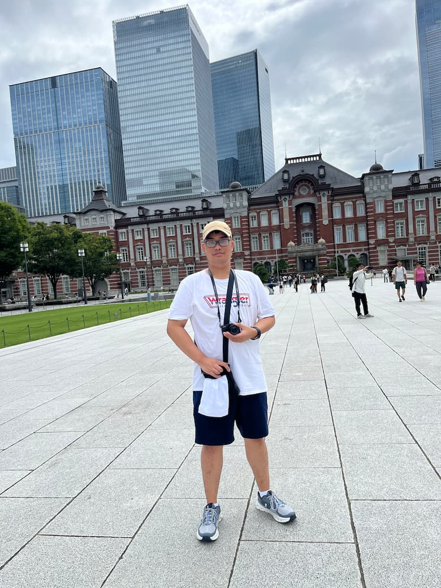

Un rêve ancien
Un voyage que je voulais faire depuis longtemps.
Ta manière de voyager
Le métro / bus
Marcher beaucoup
Regarder plus que photographier
La photo
iPhone 13
Une vielle camera
Juste pour se souvenir
Ce que tu as préféré
Visiter Odaiba et Taitô/Sumida
Le trajet pour aller entre deux lieux
Les petits moments pour acheter dans les Konbini
Être enfin arriver dans le pays que j’ai longtemps voulu voyager
Un rêve accompli.
Le reste est dans les images.
日本に帰るのが楽しみです
